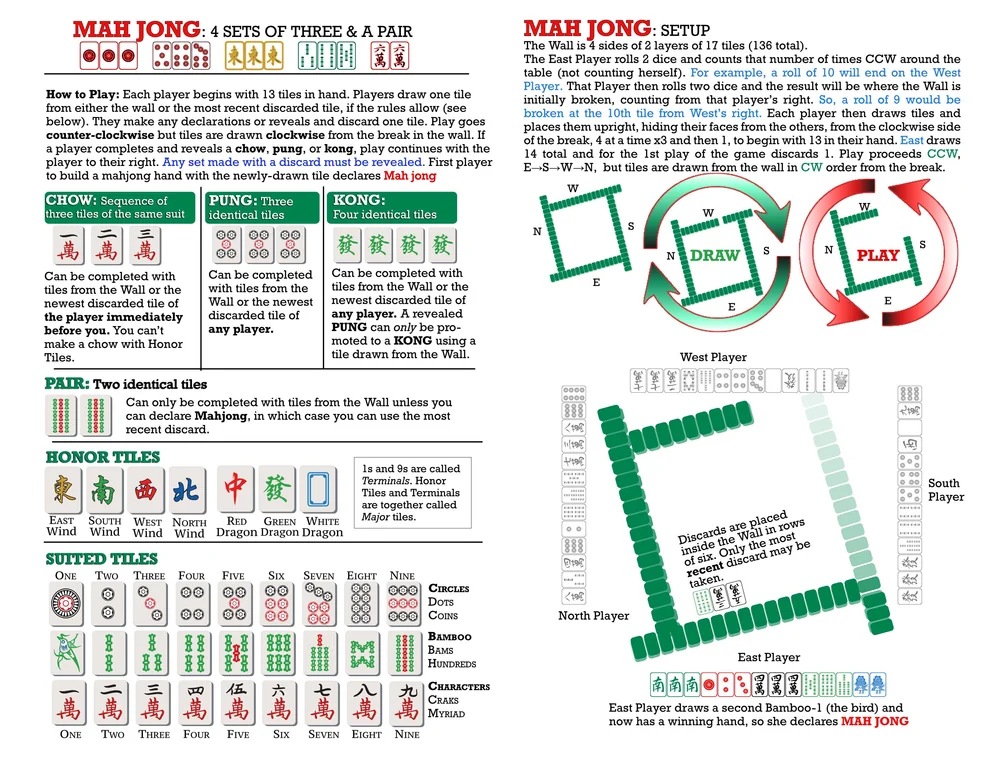

Mahjong rules
A quick guide to the basic structure and flow of a four-player game. League-specific house rules should take priority if they differ from this page.
Goal of the game
Build a legal winning hand, normally made from four sets and one pair. Each player begins with 13 tiles; East begins with 14 and discards first.
Sets
- Chow
- Three consecutive tiles from one suit. A discarded tile may normally be claimed only from the player immediately before you.
- Pung
- Three identical tiles. A discard may be claimed from any player.
- Kong
- Four identical tiles. After declaring it, draw a replacement tile from the dead wall.
- Pair
- Two identical tiles. It is usually completed from the wall, except when the tile completes a winning hand.
Turn order
Play proceeds counter-clockwise around the table. Tiles are drawn from the wall in the direction specified by the setup diagram, starting from the break.
Claiming a discard
A claimed set must be exposed. A winning claim takes priority over other claims; your league should decide how to resolve simultaneous claims.
Reference diagram
The guide below shows the tile types, basic melds, wall setup, draw direction, play direction, and a sample winning hand. Select it to open the full-size image.

League decisions to record
For clarity, your league should state its minimum fan, payment system, flower rules, dealer bonuses or repeats, time limits, false-win penalty, and procedure for disputed or simultaneous claims.